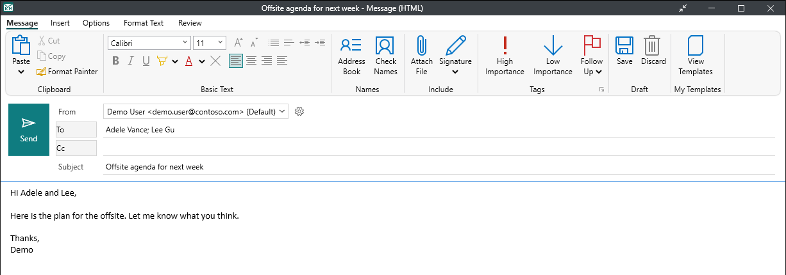
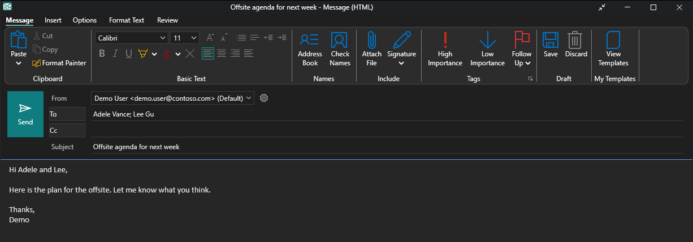

- Signatures, separate for new messages and replies, with pictures.
- Auto-Complete in To, Cc and Bcc, Check Names, the Address Book and the Global Address List.
- Formatting: styles, Format Painter, tables, pictures, line and paragraph spacing, borders and shading, symbols, horizontal lines and date and time.
- Paste Options and Paste Special, AutoCorrect as you type, and Spelling & Grammar (F7) with proofing languages.




- Quick Parts and My Templates for the text you write often.
- Insert Outlook items, business cards and your calendar’s free time into a message.
- @mentions that add people to the To line.
- Delay Delivery, Message Options (importance, sensitivity, receipts, replies sent to, expiration) and Save Sent Item To.
- Reply, Reply All, Forward, Forward as Attachment, Reply with Meeting and Resend This Message.
- Replies in the reading pane or in their own window, with Pop Out.
- Preface comments with your name: what you type into the quoted original of a reply or forward starts with [Your name], in blue, as in Outlook (File → Options → Mail).
- Drafts that save themselves every few minutes.
- Send through Exchange Online’s SMTP server for organizations whose mail Microsoft turns away when it’s sent through Graph.
Missing something you used in Outlook? Choose Help → Suggest a Feature in the app. Found a bug? Choose Help → Report a Bug.